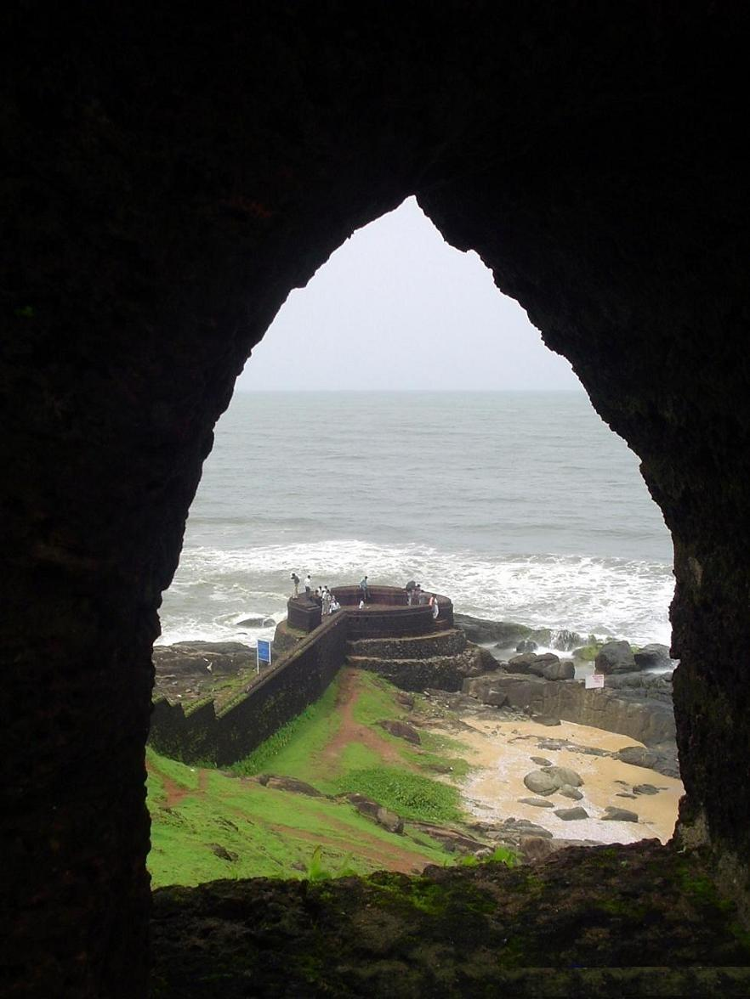
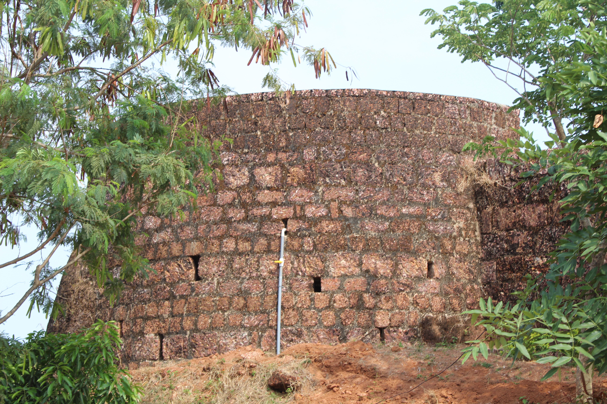

Historic Forts of Kasaragod
Bekal Fort

Covering more than 40 acres, Bekal Fort is the largest and one of the best-preserved forts in Kerala. Its laterite walls, sea-facing bastions, water tank, tunnels, and observation tower make it a landmark of the district.
It is associated with Shivappa Nayaka of Keladi, who strengthened the fort in the seventeenth century. The elevated viewpoints provide wide views of the Arabian Sea.
Bekal Fort on WikipediaChandragiri Fort

Built in the seventeenth century on the banks of the Chandragiri River, this compact fort is known for its hilltop setting and beautiful sunset views toward the river and Arabian Sea.
Chandragiri Fort on Wikipedia